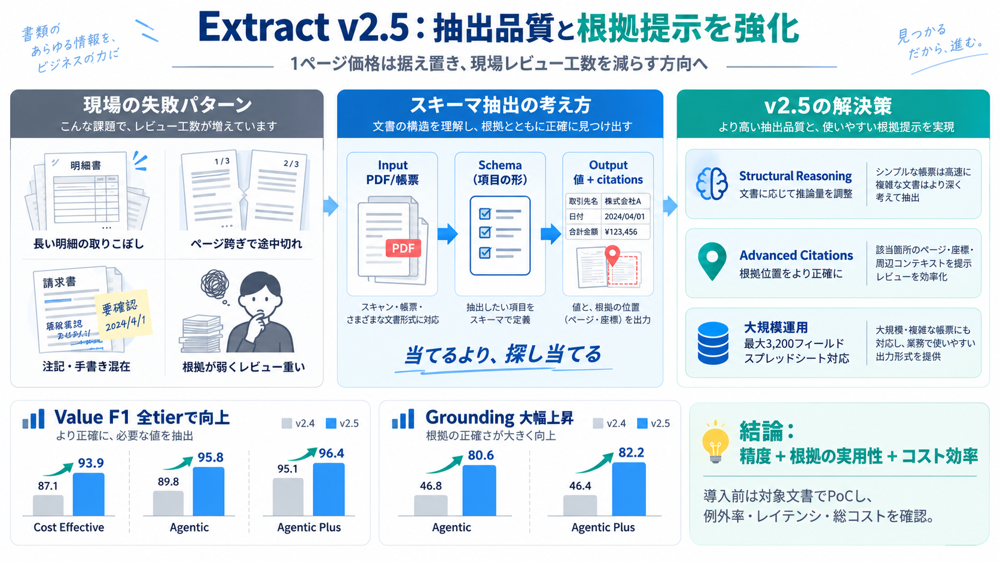

Introducing Extract v2.5
Today we’re introducing Extract v2.5, a new generation of our schema-based document extraction agents. This release brin…

Today we’re introducing Extract v2.5, a new generation of our schema-based document extraction agents. This release brin…
[4:04] name. And let's call it filing agent. Let's provide it with our config. [4:15] And then let's also provide it wit…
LlamaParse Extract is schema-driven. You define a Pydantic model that describes the fields you want to extract, and Llam…
Refer to caption Figure 2: Detailed architecture of PARSE’s two main components: ARCHITECT and SCOPE. The Build Phase …
The ability to create and manage custom Extract Agents with Box Extract is now available to Box customers through the En…